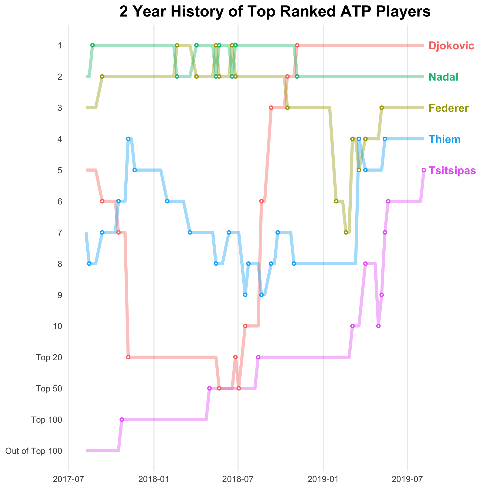
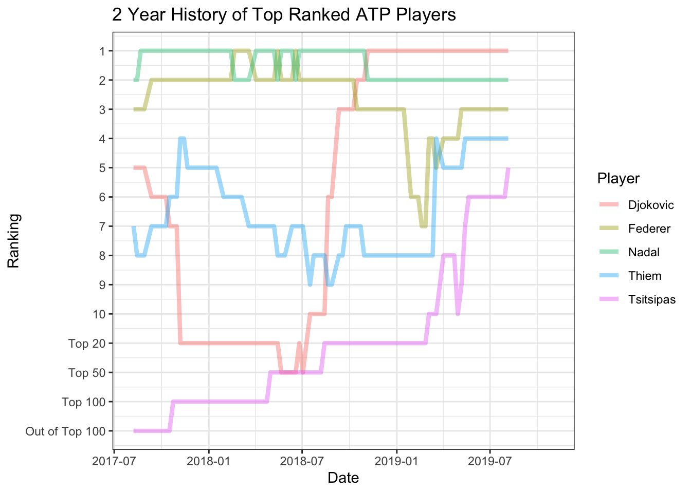
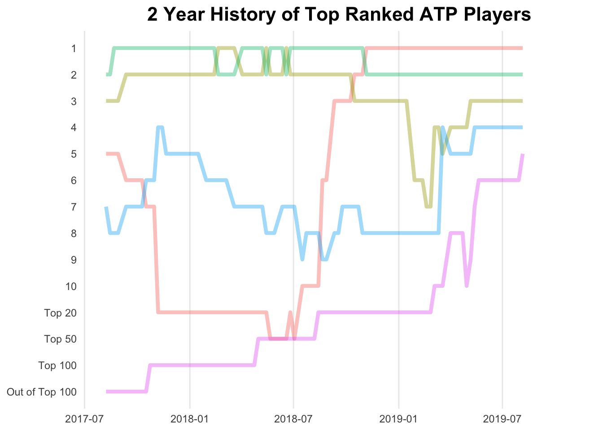
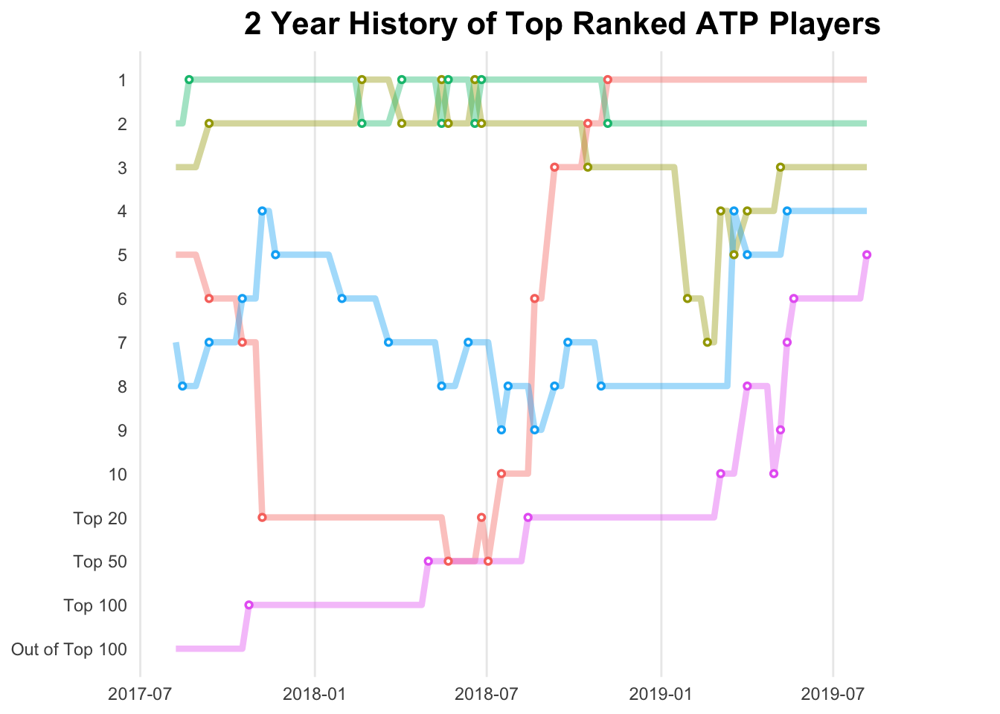
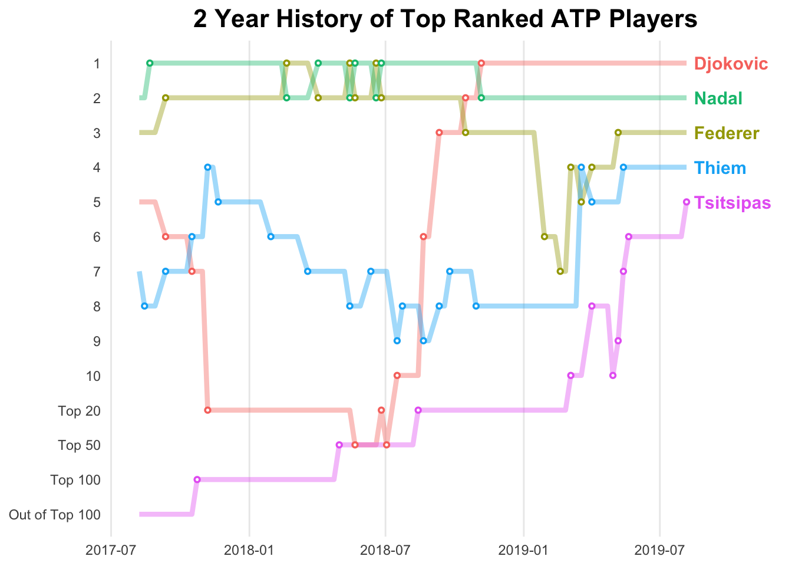

2 Year History of Top-ranked ATP Players

Data
For this plot, we will use the atp_rankings data frame of the gcubed package.
head(atp_rankings)## # A tibble: 6 x 6
## Year Month Day Singles Player Date
## <dbl> <dbl> <dbl> <int> <chr> <dttm>
## 1 2017 8 7 5 Djokovic 2017-08-07 12:00:00
## 2 2017 8 7 2 Nadal 2017-08-07 12:00:00
## 3 2017 8 7 3 Federer 2017-08-07 12:00:00
## 4 2017 8 7 7 Thiem 2017-08-07 12:00:00
## 5 2017 8 7 168 Tsitsipas 2017-08-07 12:00:00
## 6 2017 8 14 5 Djokovic 2017-08-14 12:00:00First, create a new variable, Ranking that preserves the rankings when the player is in the top 10. When the player is not in the top 10, the new variable is set to: 11 if the player is in the top 20; 12 if the player is ranked between 21 and 50 (inclusive); 13 if the player is ranked between 51 and 100 (inclusive); 14 if the player is ranked lower than 100.
Also, we create a variable Change to be used later to identify the points in time when the players’ rankings changed.
rankings <- mutate(atp_rankings, Ranking = ifelse(Singles > 100, 14,
ifelse(Singles > 50, 13,
ifelse(Singles > 20, 12,
ifelse(Singles > 10, 11, Singles))))) %>%
group_by(Player) %>% mutate(Change = c(0,diff(Ranking))) %>% ungroup()Code for plot
ylabels <- c(1:10, "Top 20", "Top 50", "Top 100", "Out of Top 100")
show_date <- ISOdate(2019, 11,1)
begin_date <- ISOdate(2017, 8, 7)
next_date <- ISOdate(2019, 8, 15)
atp_plt <- ggplot(data = rankings, aes(x = Date, y = Ranking, group = Player)) +
geom_line(aes(color = Player), alpha = 0.4, size = 1.5) +
scale_y_continuous(breaks = c(1:14), labels = ylabels, trans = "reverse") +
ggtitle("2 Year History of Top Ranked ATP Players") +
xlim(c(begin_date, show_date)) +
theme_bw()
atp_plt
Next, we can change the overall look of the plot using the theme function to change several details of the graph.
atp_plt <- atp_plt +
theme(panel.grid.major.y = element_blank(), panel.grid.minor.y = element_blank(),
panel.grid.minor.x = element_blank(), axis.ticks = element_blank(),
legend.position = "none", panel.border = element_blank(),
axis.title.x = element_blank(), axis.title.y = element_blank(),
plot.title = element_text(size = 16, face = "bold", hjust = 0.5))
atp_plt
Adding some points to signify the times at which the players’ rankings changed using geom_point. We are going to use two geom_point geometries to create a smaller white circle inside the coloured larger circles.
changes <- filter(rankings, Change != 0)
atp_plt <- atp_plt + geom_point(data = changes, aes(x = Date, y = Ranking, color = Player)) +
geom_point(data = changes, color = "#FFFFFF", size = 0.25)
atp_plt
Now to add the annotation of the players’ names using geom_text.
last_rankings <- rankings %>% top_n(5, Date)
last_rankings$nextd <- next_date
atp_plt <- atp_plt + geom_text(data = last_rankings,
aes(label = Player, x = nextd, colour = Player) , hjust = 0,
fontface = "bold", size = 4)
atp_plt
The complete code for the plot:
atp_plt <- ggplot(data = rankings, aes(x = Date, y = Ranking, group = Player)) +
geom_line(aes(color = Player), alpha = 0.4, size = 1.5) +
scale_y_continuous(breaks = c(1:14), labels = ylabels, trans = "reverse") +
ggtitle("2 Year History of Top Ranked ATP Players") +
xlim(c(begin_date, show_date)) +
theme_bw() +
theme(panel.grid.major.y = element_blank(), panel.grid.minor.y = element_blank(),
panel.grid.minor.x = element_blank(), axis.ticks = element_blank(),
legend.position = "none", panel.border = element_blank(),
axis.title.x = element_blank(), axis.title.y = element_blank(),
plot.title = element_text(size = 16, face = "bold", hjust = 0.5)) + geom_point(data = changes, aes(x = Date, y = Ranking, color = Player)) +
geom_point(data = changes, color = "#FFFFFF", size = 0.25) + geom_text(data = last_rankings,
aes(label = Player, x = nextd, colour = Player) , hjust = 0,
fontface = "bold", size = 4)
atp_plt